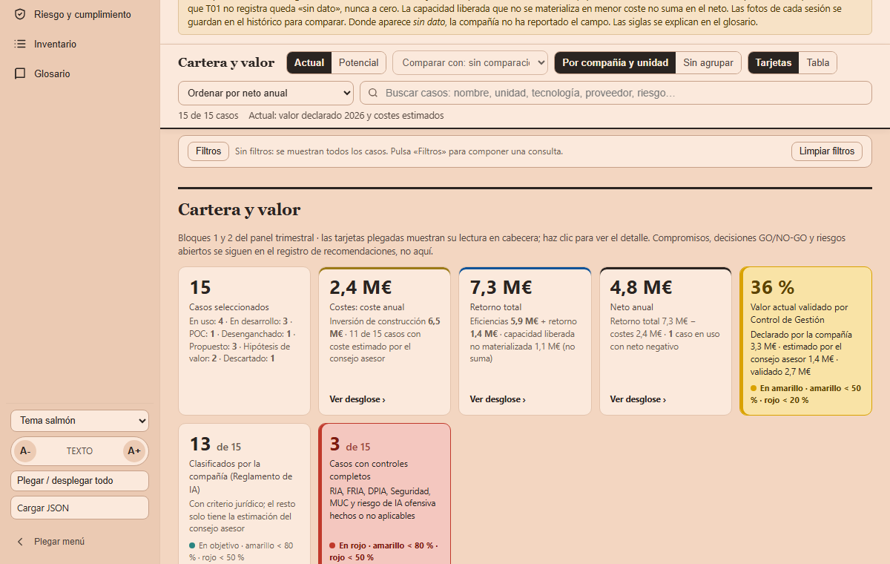

Versión en revisión: no difundir. El estado actual de SEVEN-G (versión 0.x) no está pensado para compartirse de forma general. Se mantiene en público para que un número reducido de personas pueda revisarlo, dar su opinión y ayudar a mejorarlo. Se está trabajando en la adecuación de los documentos y las herramientas para que sean reutilizables; este aviso desaparecerá cuando el marco pase a la versión 1.x.
Aviso legal y exención de responsabilidad. SEVEN-G es un marco metodológico de referencia que se ofrece «tal cual» y con fines exclusivamente informativos. No constituye asesoramiento jurídico, regulatorio, financiero ni profesional, ni garantiza el cumplimiento de ninguna norma. Las referencias a regulación general (como el Reglamento Europeo de IA, el RGPD, DORA o NIS2), a normas técnicas y a regulación específica de cada sector o jurisdicción pueden ser incompletas, no aplicar a un caso concreto o quedar desactualizadas por cambios normativos, interpretaciones o criterios de las autoridades posteriores a su fecha de consulta. Cada organización que use SEVEN-G es la única responsable de identificar la normativa que le aplica, verificar su vigencia y certificar su propio cumplimiento regulatorio, con el asesoramiento cualificado que corresponda. El autor no asume responsabilidad alguna por el uso que se haga de este contenido ni por las decisiones que se adopten con él. Los datos, cifras, compañías y casos de los ejemplos son ficticios o ilustrativos.
00Inicio rápido (Quick Start)
SEVEN-G (Seven-phase Enterprise Value & Governance) es un método completo, gratuito y modificable, para que una compañía, una consultora o un profesional independiente implante, gobierne y mida la inteligencia artificial de una organización —autoconsultoría empresarial apoyada en IA— y pueda responder con evidencia si se está transformando o solo está siendo más eficiente. Esta sección se lee en cinco minutos y sirve para una sola cosa: decidir si merece la pena seguir leyendo.
Qué hace, en cuatro ideas
- Ordena la IA de la compañía como una cartera, no como una lista de proyectos: cada iniciativa se da de alta, se sabe en qué fase está, cuánto cuesta, qué valor se espera de ella y quién responde.
- Pone puertas de decisión entre las fases. Para avanzar hay que aportar resultados y documentación verificada; si no, la iniciativa se itera, se pivota o se para, y el motivo queda registrado.
- Separa quién decide, quién construye y quién controla, y traduce la regulación (Reglamento Europeo de IA, RGPD, DORA, NIS2, ISO/IEC 42001) a fases, roles y evidencias concretas.
- Mide el valor en dinero y con estado —validado, declarado o estimado— y le dice al consejo, con ocho señales observables, si la compañía se transforma o solo se eficienta.
Qué se lleva, sin coste
SEVEN-G no es un folleto que termina en una propuesta comercial: el material de trabajo está aquí, entero. Los documentos explican el método; las plantillas son los entregables ya preparados para rellenar; las herramientas son aplicaciones que funcionan con los datos de cada compañía. Todo puede usarse tal cual, recortarse, ampliarse, cambiarse de nombre o integrarse en la metodología que la compañía o su consultora ya utilicen, con una única condición: citar la autoría e indicar los cambios.
Por qué importa. La mayor parte del coste de poner orden en la IA no está en entender qué hay que hacer, sino en fabricar los instrumentos: políticas, actas, registros, listas de verificación, cuadros de mando. Partir de un material completo, que se puede modificar sin pedir permiso, permite dedicar el esfuerzo a decidir y no a maquetar, y comprobar en una tarde —con los datos de ejemplo— si el enfoque encaja con la compañía antes de comprometer a nadie.
Qué se obtiene, para quien quiere verlo antes de leer
Dos vistazos, con los datos ficticios de ejemplo: la cartera de iniciativas de IA leída como un embudo (a qué fase llega cada iniciativa, cuántas se pierden en cada una y por qué) y el panel del consejo generado a partir de ese mismo registro (coste, retorno y neto de la cartera). Es a donde lleva usar SEVEN-G: del registro de una iniciativa a una decisión de consejo con evidencia.

¿Le sirve? (a su compañía, o a la consultora o profesional que la asesora)
| Probablemente le sirve si… | Probablemente no le sirve, o todavía no, si… |
|---|---|
| Ya tiene iniciativas de IA —pilotos, asistentes generativos, modelos, agentes— y nadie puede decir con evidencia cuánto cuestan, cuánto aportan y quién responde de cada una. | Busca una guía técnica para construir modelos o elegir tecnología. SEVEN-G gobierna y mide; para la construcción remite al documento 53 y a la metodología SPAD. |
| El consejo o la dirección preguntan por la IA y reciben un inventario de proyectos técnicos en lugar de decisiones de negocio. | Busca una certificación o un sello. No existe: la declaración de aplicación es una autodeclaración verificable por auditoría. |
| Hay muchos pilotos y pocos casos en producción, y ninguna regla para parar lo que no funciona. | Espera asesoramiento jurídico o una garantía de cumplimiento. El marco mapea obligaciones a evidencias, pero cada compañía responde de su propio cumplimiento. |
| Tiene que demostrar cumplimiento con evidencias y no con declaraciones. | Solo tiene una o dos pruebas sin presupuesto ni intención de llevarlas a producción. Empiece por la política de uso aceptable (documento 31) y el inventario de sistemas (T02), y vuelva cuando haya una cartera que gobernar. |
| Es una compañía mediana sin equipo de IA: el alcance Lite funciona con el comité de dirección, una persona a tiempo parcial y un auditor externo. | Nadie en la dirección va a asumir las decisiones. El marco exige un patrocinador por iniciativa y capacidad real de parar; sin eso, solo produce documentos. |
| Es consultor o responsable interno y necesita un método completo que pueda adaptar y aplicar con su propia forma de trabajar, citando la fuente (documento 91). |
Qué exige a cambio. No cuesta dinero, pero sí disciplina: alguien que lo impulse, un registro de iniciativas al día y decisiones que se toman con evidencia delante. La adopción puede ser modular —empezar solo por el registro, por las puertas de decisión, por la medición del valor o por el panel del consejo— y ampliarse después. La guía de implantación (documento 90) propone un plan de 90 días y una ruta mínima para compañías medianas.
Por dónde seguir, según quién sea
| Si es… | Siga por… |
|---|---|
| Miembro del consejo o de la alta dirección | La sección 5 de esta página (transformarse o eficientarse), la guía de conversación con el consejo y el panel del consejo de ejemplo (T17). |
| Responsable de IA, datos o tecnología | La metodología fundacional, los manuales de fase y el registro de iniciativas (T01). |
| Riesgos, cumplimiento, protección de datos o auditoría | El mapeo regulatorio, la metodología de riesgos y el marco de auditoría. |
| Dirección financiera o control de gestión | Las reglas de medición del valor y la calculadora de valor y costes (T11). |
| Consultor o responsable de implantar el marco | La guía de implantación, la guía para consultores y los casos de aplicación. |
El resto de esta página desarrolla lo anterior con detalle: qué significa SEVEN-G y cómo se recorre (sección 1), qué problema resuelve (2), a qué ayuda (3), cómo está construido (4), cómo distingue la transformación de la eficiencia (5) y con qué reglas mide el valor (6).
01Qué significa SEVEN-G
SEVEN-G significa Seven-phase Enterprise Value & Governance: una fase 0 habilitante y siete fases de valor (1–7), con gobierno transversal en todas ellas.
La intención del marco es iniciar, con apoyo de IA, un modelo de autoconsultoría empresarial: que cualquier compañía, consultora o profesional independiente pueda usar SEVEN-G para implantar, gobernar, medir, adaptar, extender y mejorar un sistema de IA sin depender de una interpretación cerrada de terceros.
SEVEN-G está diseñado para ser compatible con estructuras de gobierno ya existentes, con consultoras internas o externas y con otros marcos que la compañía ya utilice. No exige reemplazarlos: permite integrarlos, ordenar sus aportaciones y convertirlas en decisiones trazables con criterios comunes de valor, riesgo, cumplimiento y medición.
Ese uso y su adaptación están permitidos por la licencia de contenidos del proyecto (CC BY 4.0), con una condición explícita: reconocer siempre la autoría y citar de forma visible a Fernando García Varela, indicando además si se han hecho cambios.
SEVEN-G permite que una organización implante, gobierne y mida la inteligencia artificial con el mismo rigor con el que gestiona sus finanzas, sus riesgos o su cumplimiento normativo, y que sus órganos de decisión y de gobierno puedan responder con evidencia a una pregunta que hoy casi nadie sabe contestar:
¿La compañía se está transformando con IA o solo está siendo más eficiente?
Las dos cosas son legítimas. El problema aparece cuando se confunden: cuando una cartera de automatizaciones se presenta como transformación, cuando se declaran ahorros que nunca se materializan, o cuando las apuestas que podrían cambiar el negocio se bloquean con los mismos criterios de retorno que un proyecto de recorte de costes.
El objetivo práctico es que el consejo, la alta dirección y los órganos de control entiendan y midan la aportación de la inteligencia empresarial en su compañía, comprendan y contengan sus riesgos y decidan, con disciplina de cartera, en qué iniciativas conviene invertir para mejorar la eficiencia, transformar capacidades y generar impacto real en la cuenta de resultados (P&L).
Titularidad y reutilización. La propiedad intelectual de la metodología SEVEN-G —sus documentos, plantillas, criterios y herramientas— pertenece a su autor, Fernando García Varela. El marco se ofrece como referencia abierta para uso, adaptación y aprendizaje, no como un producto comercial cerrado ni como una versión liberada a clientes o mercados: cualquier organización puede reutilizarlo y adaptarlo, pero ese uso queda sujeto a la licencia de contenidos y de código del proyecto (CC BY 4.0 para los contenidos, MIT para el código; documento 93), que exige reconocer la autoría e indicar los cambios. Usar SEVEN-G, incluida su adaptación conforme a esa licencia, no transfiere la titularidad de la metodología ni otorga exclusividad ni derecho de propiedad sobre la base metodológica a ningún cliente, proveedor o tercero, salvo pacto escrito y específico sobre desarrollos propios.
SEVEN-G aporta cuatro cosas:
- Un mapa de dónde y con qué ambición usar la IA: nueve esferas de impacto y tres niveles de ambición (Optimizar, Aumentar, Transformar).
- Un ciclo de vida controlado para cada iniciativa, con fases, puertas de decisión (gates) auditables y capacidad real de parar o retirar.
- Un sistema de gobierno con roles separados, responsabilidades claras y cumplimiento regulatorio mapeado (Reglamento Europeo de IA, ISO/IEC 42001, RGPD, DORA y normativa sectorial).
- Un sistema de medición con reglas explícitas que separan el valor validado del declarado, la eficiencia del crecimiento y la transformación evidenciada de la transformación anunciada.
La adopción puede ser integral o modular: una compañía puede desplegar el marco completo o empezar por un componente concreto (por ejemplo, medición, gates, inventario regulatorio o panel de supervisión) y ampliar después sin perder coherencia metodológica.
Todo ello se acompaña de plantillas, criterios de auditoría y herramientas —entre ellas un panel de IA para el consejo— que permiten aplicarlo en cualquier sector.
Cómo se usa SEVEN-G, de un vistazo
Antes del detalle, el recorrido. Cada iniciativa avanza por fases y, al final de cada una, una puerta de decisión comprueba a la vez el resultado y la documentación (validación dual). Si no se cumple lo que exigen los documentos, la iniciativa no avanza: se itera (como máximo dos veces antes de elevar la decisión), se pivota a una nueva hipótesis o se para, y el motivo queda registrado. Superada la puesta en producción (G5), la iniciativa entra en un bucle de operación con monitorización continua y revisiones periódicas de continuidad (R6), hasta que la puerta G7 decide escalarla, iterarla o retirarla.
El mapa siguiente reúne en una sola vista cómo se recorre el marco: arriba, el ciclo corporativo en el que la compañía decide y supervisa; en el centro, el ciclo de vida de cada iniciativa, con su etapa del embudo, su fase, su puerta de decisión y las plantillas, documentos y herramientas que se usan en ella; abajo, el gobierno transversal que acompaña a todas las fases. Cada elemento enlaza con el documento, la sección, la plantilla o la herramienta que lo desarrolla.
Por qué importa. SEVEN-G tiene muchas piezas, y quien lo usa por primera vez necesita saber qué toca en cada momento y dónde está. El mapa responde a tres preguntas prácticas —en qué fase está una iniciativa, qué hay que aportar para superar su puerta y con qué plantilla o herramienta— y sirve de punto de partida para navegar por la biblioteca sin leerla entera.
02El problema que resuelve
En la mayoría de las organizaciones la IA crece más rápido que su capacidad para gobernarla. Los síntomas son reconocibles en cualquier sector:
| Síntoma | Consecuencia |
|---|---|
| El consejo recibe la IA como un inventario de proyectos técnicos, no como decisiones de negocio. | No puede priorizar, no puede exigir y no puede ejercer su responsabilidad de supervisión. |
| Hay muchos pilotos y pocos casos en producción. Los pilotos no se cierran ni se escalan. | Coste recurrente sin retorno y pérdida de credibilidad interna. |
| El valor se declara, no se valida. Las horas liberadas se suman como ahorro aunque nadie las haya materializado. | Cifras agregadas que no resisten una auditoría y decisiones de inversión mal fundadas. |
| Nadie puede parar un proyecto. No existen criterios formales para iterar, pivotar o retirar. | Carteras que solo crecen y concentran riesgo. |
| La responsabilidad está fragmentada entre tecnología, negocio, riesgos y cumplimiento. Quien construye también aprueba. | Controles débiles y ausencia de rendición de cuentas. |
| El riesgo regulatorio y de seguridad se aborda tarde: clasificación según el Reglamento de IA, evaluaciones de impacto, proveedores, agentes con permisos excesivos, IA usada por atacantes. | Exposición legal, reputacional y operativa. |
| Se usa la palabra "transformación" para describir iniciativas que hacen lo mismo con menos coste. | La organización cree que se está transformando cuando solo se está eficientando, y no toma las decisiones que exigiría una transformación real. |
SEVEN-G parte de una premisa: estos problemas no son tecnológicos, son de gobierno y de medición. Por eso el marco se dirige tanto a los equipos que construyen como a quienes deciden y supervisan.
03A qué ayuda SEVEN-G
3.1 A implantar la IA
- Identificar oportunidades desde el negocio, no desde la tecnología disponible.
- Formular cada iniciativa como una hipótesis de valor falsable: línea base, objetivo, método de atribución y umbral de éxito definidos antes de invertir.
- Recorrer un ciclo de vida con fases y entregables conocidos, desde la definición del contexto hasta la operación, el escalado o la retirada.
- Decidir con criterios explícitos en cada gate: continuar, continuar con condiciones, iterar, pivotar o parar.
- Pasar de piloto a producción con requisitos de operación, supervisión humana, monitorización y reversibilidad.
- Abordar la IA generativa y los agentes con controles específicos: evaluaciones, identidad y permisos de los agentes, control de intención, interruptor de parada y validación humana en acciones sensibles.
3.2 A gobernar la IA
- Establecer quién decide, quién construye y quién controla, con separación de funciones: quien construye no audita y nadie se aprueba a sí mismo.
- Mantener un inventario de sistemas de IA con su clasificación regulatoria, sus evaluaciones (protección de datos, derechos fundamentales, seguridad) y su responsable.
- Integrar la IA en los órganos existentes —consejo, comité de riesgos, auditoría interna, cumplimiento— en lugar de crear un gobierno paralelo.
- Traducir la regulación a controles concretos. SEVEN-G no incrusta una norma concreta: mapea cada obligación a una fase, un rol y una evidencia, de modo que el marco sobrevive a los cambios regulatorios.
- Gestionar a los proveedores de IA: construir, comprar o aliarse; dependencia tecnológica; contratos que protejan datos y propiedad intelectual; obligaciones de terceros críticos.
- Tratar las desviaciones como no conformidades con contención, causa raíz, acción correctiva y reauditoría.
3.3 A medir la implantación y el valor
- Medir cada caso en dinero, con fórmula y con estado de validación: validado (por control de gestión o auditoría), declarado (por el área) o estimado (por el comité de IA, el consejo o el equipo evaluador).
- Separar eficiencias (menor coste) de retorno (ingresos, retención, precio, margen) y ambas del coste recurrente.
- Aplicar reglas que evitan las cifras infladas (sección 6).
- Medir la agilidad del sistema de decisión: tiempo desde la idea hasta la aprobación y hasta producción, por nivel de riesgo y de ambición.
- Medir la madurez con evidencia observable, no con autoevaluaciones.
- Mantener un registro de recomendaciones y decisiones con identificadores persistentes, responsables, fechas y evidencias, de modo que el seguimiento no dependa de la memoria de las reuniones.
3.4 A saber si la compañía se transforma o solo se eficienta
Es la aportación más diferencial del marco y se desarrolla en la sección 5.
04Cómo está construido el marco
SEVEN-G se organiza en dos niveles de gobierno —el de la compañía y el de cada iniciativa— y en cuatro componentes que se usan en ambos niveles.
4.1 Componente A · Mapa de impacto: nueve esferas y tres niveles de ambición
Un consejo no decide sobre casos de uso; decide sobre riesgo, oportunidad, ventaja competitiva y responsabilidad. El mapa de impacto permite hablar de IA sin hablar de tecnología.
Por qué importa. Sin mapa de impacto, la cartera se llena de iniciativas técnicamente atractivas pero estratégicamente desordenadas. El mapa obliga a decidir dónde se quiere crear valor, qué ambición se asume y qué no se va a financiar.
Nueve esferas, válidas para cualquier sector:
Donde se genera valor01 Cliente · 02 Producto y servicio · 03 Personas · 04 Operaciones
Habilitadoras05 Datos · 06 Conocimiento · 07 Decisión. Es donde aparecen las preguntas incómodas.
Límites08 Regulación, ética y responsabilidad. Se evalúa en cumplimiento, anticipación y liderazgo ético.
Meta-esfera09 Gobierno de la IA. Conecta las otras ocho con la formalidad de finanzas, riesgos o cumplimiento.
| Tipo | Esfera | Pregunta de referencia para el consejo |
|---|---|---|
| Donde se genera valor | 01 · Cliente | Si un competidor conoce mejor a nuestros clientes porque usa mejor la IA, ¿cuánto tardamos en perder relevancia? |
| 02 · Producto y servicio | ¿Usamos la IA para proteger el producto actual o para construir el siguiente? | |
| 03 · Personas | ¿La IA sustituye, aumenta o reorganiza el trabajo de las personas? | |
| 04 · Operaciones | ¿Qué procesos tienen un retorno demostrable a corto plazo y cuáles requieren rediseño completo? | |
| Habilitadoras | 05 · Datos | ¿Sabemos qué datos tenemos, quién responde de su calidad y si podemos usarlos legalmente para IA? |
| 06 · Conocimiento | ¿Cuánto conocimiento crítico depende de pocas personas y no está disponible para la organización? | |
| 07 · Decisión | ¿Qué decide la IA sola, qué requiere validación humana y qué no se delega nunca? | |
| Límites | 08 · Regulación, ética y responsabilidad | ¿Gobernamos de forma proactiva o esperamos a que el regulador nos obligue? |
| Meta-esfera | 09 · Gobierno de la IA | ¿Tiene la IA un gobierno corporativo con la misma formalidad que finanzas, riesgos o cumplimiento? |
Tres niveles de ambición, que no son una escalera sino tres tipos de apuesta con distinto coste, riesgo, plazo y resistencia organizativa:
| Nivel | Qué significa | Dónde está el valor | Quién debe decidir |
|---|---|---|---|
| Optimizar | Hacer lo mismo más rápido, más barato o con menos errores. No cambia qué se hace ni quién lo hace. | Principalmente en eficiencias (coste evitado). | Dirección del área, dentro del marco de cartera. |
| Aumentar | Las personas hacen lo que antes no podían. Cambia el rol, no el negocio. | Combinado: coste y rendimiento (productividad, calidad, conversión). | Dirección, con visibilidad del comité de IA. |
| Transformar | Cambia qué se ofrece, cómo se compite o cómo se organiza la compañía. | Principalmente en retorno (ingresos, nuevos servicios, posición competitiva) y en cambios del modelo operativo. | Decisión explícita del consejo o de la alta dirección. |
Las esferas 08 y 09 no se evalúan con estos tres niveles, porque no generan valor por sí mismas: la esfera 08 se evalúa en Cumplimiento, Anticipación y Liderazgo ético, y la esfera 09 en Estructura, Equilibrio entre velocidad y control y Ecosistema de proveedores (grados Ausente, Básico, Sistemático y Avanzado; documento 10).
4.2 Nivel compañía · Ciclo corporativo
Es el ciclo en el que el consejo y la alta dirección ejercen su función. Se recorre de forma anual, con supervisión trimestral:
Por qué importa. Sin ciclo corporativo, las decisiones de IA se quedan en proyectos aislados. Este ciclo convierte la IA en una disciplina de dirección: define rumbo, asigna capital, supervisa ejecución y exige revisión anual basada en evidencia.
| Etapa | Pregunta que responde | Resultado principal |
|---|---|---|
| C1 · Diagnóstico | ¿Dónde estamos? | Madurez por dimensión con evidencia, mapa de esferas actual, perfil de eficiencia–transformación, inventario de sistemas de IA. |
| C2 · Dirección | ¿Dónde queremos jugar y con qué ambición y apetito de riesgo? | Tesis de IA de la compañía, nivel de ambición por esfera, apetito de riesgo, principios y política corporativa. |
| C3 · Cartera | ¿Qué iniciativas financiamos, cuáles paramos y en qué equilibrio? | Cartera priorizada con equilibrio entre niveles de ambición, presupuesto y responsables. |
| C4 · Supervisión | ¿Se está cumpliendo lo decidido? | Panel del consejo, registro de recomendaciones, decisiones de gate relevantes, incidentes y no conformidades. |
| C5 · Revisión | ¿Hemos avanzado? ¿Nos estamos transformando? | Revisión anual de madurez, del índice de transformación y de la tesis de IA. |
Una primera implantación puede concentrar C1 a C3 en noventa días: diagnóstico de madurez (mes 1), mapa de riesgos y oportunidades con responsable e impacto económico (mes 2) y estructura de gobierno con gates, métricas y ritmo de reporte (mes 3).
4.3 Nivel iniciativa · Ciclo de vida con puertas de decisión
Cada iniciativa de IA recorre ocho fases. La fase 0 es habilitante: sin ella la iniciativa no está autorizada. Las siete fases siguientes conducen la iniciativa desde la oportunidad hasta el valor demostrado, y la G de SEVEN-G expresa que el gobierno está presente en todas ellas.
Por qué importa. El ciclo de vida evita dos errores caros: poner en producción sin evidencia y mantener iniciativas sin valor por inercia. Las puertas de decisión introducen disciplina de inversión y permiten parar a tiempo.
| Fase | Nombre | Objetivo | Evidencias principales |
|---|---|---|---|
| 0 | Contexto y restricciones | Fijar objetivos estratégicos, restricciones regulatorias, éticas y presupuestarias, y asignar roles. | Carta de la iniciativa, declaración de contexto, registro de asignación de roles. |
| 1 | Descubrimiento de oportunidades | Identificar oportunidades desde el negocio y descartar las que no requieren IA. | Cartera de oportunidades, notas de filtrado, esfera y nivel de ambición propuestos. |
| 2 | Hipótesis de valor | Formular una hipótesis medible y falsable. Si la hipótesis no puede fallar, no es válida. | Lienzo de hipótesis de valor, métricas de línea base, método de atribución. |
| 3 | Viabilidad y riesgo | Evaluar viabilidad técnica, económica, de datos y de riesgo. Es la principal puerta de parada. | Evaluación de viabilidad, clasificación regulatoria, matriz y registro de riesgos, plan de mitigación. |
| 4 | Diseño de la solución | Diseñar arquitectura, linaje de datos y modelos, supervisión humana, controles y reversibilidad. | Registro de arquitectura, linaje de datos y modelos, diseño de gobierno, plan de reversión. |
| 5 | Entrega y validación | Demostrar el valor en condiciones reales. Los resultados teóricos no son suficientes. | Informe de entrega, resultados de validación, registro de riesgos actualizado. |
| 6 | Operación y gobierno | Operar con estabilidad, vigilar la degradación, responder a incidentes. | Manual de operación, configuración de monitorización y alertas, plan de respuesta a incidentes. |
| 7 | Evolución o retirada | Escalar, iterar o retirar según la evidencia de valor y riesgo. | Seguimiento de realización de valor, registro de decisión de escalado o retirada. |
La cartera de iniciativas, como un embudo
SEVEN-G entiende el conjunto de iniciativas de IA de la compañía con la misma aproximación que un embudo tradicional de ventas: para llegar a su estadio final —en producción— cada iniciativa ha de atravesar un conjunto obligatorio de estados, y en cada uno puede avanzar, esperar o quedarse fuera. Dar de alta una iniciativa equivale a registrar una oportunidad en un CRM: desde ese momento se sabe en qué etapa está, cuánto tiempo lleva en ella, qué coste, eficiencias y retorno se esperan y, si sale del embudo, por qué salió y qué se aprendió.
Las etapas del embudo agrupan las fases del ciclo de vida: Propuesto (fases 0 y 1), Hipótesis de valor (fase 2), Prueba de concepto (fase 3) y En desarrollo (fases 4 y 5). El embudo contiene solo las iniciativas en curso. Las que están En uso (fases 6 y 7) ya lo han atravesado, y las que se desenganchan después de haber estado en uso se siguen aparte, con su motivo.
Por qué importa. El embudo convierte la cartera en algo que el comité de IA y el consejo leen de un vistazo: cuántas iniciativas entran, dónde se atascan, cuántas llegan a producción, qué valor producen y qué se aprende de las que no llegan. Es la vista que comparten el registro de iniciativas (T01) y el panel del consejo (T17).
Reglas de las puertas de decisión
- Cada gate se supera con validación dual: resultados tangibles y documentación verificada.
- Resultados posibles: Continuar, Continuar con condiciones, Iterar, Pivotar o Parar. En la fase 7: Escalar, Iterar o Retirar.
- Si falta una evidencia obligatoria, no se continúa. El cumplimiento parcial solo permite iterar o continuar con condiciones explícitas, plazo y responsable.
- Nadie aprueba su propio trabajo. La documentación elaborada a posteriori para superar un gate invalida el gate.
- Una decisión de parar bien fundamentada es un resultado válido del método: evitar una mala inversión también es generar valor.
Dos intensidades de aplicación
| Intensidad | Cuándo se aplica | Qué cambia |
|---|---|---|
| Lite | Iniciativas de bajo riesgo, uso interno, sin decisiones sobre personas ni exposición a clientes, inversión reducida. | Gates agrupados, plantillas simplificadas, decisión del patrocinador con registro y verificación de la oficina de IA. |
| Enterprise | Sistemas de alto riesgo según la regulación, exposición directa a clientes o personas, decisiones automatizadas, agentes con capacidad de actuar, entornos regulados o inversión significativa. | Todos los gates y evidencias, auditoría independiente, visibilidad del comité de IA y, cuando proceda, del consejo. |
La intensidad se decide iniciativa a iniciativa. Aparte, cada compañía elige su alcance de implantación, también Lite o Enterprise, que decide cómo organiza sus órganos y su verificación: con alcance Lite, una compañía mediana y no regulada gobierna la IA con su comité de dirección, una oficina de IA de una persona a tiempo parcial y un auditor externo, y toda iniciativa que cumple un criterio Enterprise sigue gestionándose con intensidad Enterprise. La guía de implantación (documento 90, sección 2) explica cómo se elige el alcance y cuál es la ruta mínima en alcance Lite.
4.4 Componente B · Sistema de gobierno
Por qué importa. Si no se separan las funciones de decidir, construir y controlar, el marco pierde credibilidad y aumenta el riesgo operativo y regulatorio. Un sistema de gobierno claro acelera las decisiones correctas y reduce el coste de corregir errores.
Roles de la iniciativa, con separación de funciones:
| Función | Rol | Responsabilidad |
|---|---|---|
| Decide | Patrocinador de IA (AI Sponsor) | Responde del valor y autoriza la inversión. |
| Construye | Responsable de producto de IA (AI Product Owner) | Responde de la hipótesis de valor y de la adopción. |
| Responsable técnico de IA (AI Technical Owner) | Responde de la solución, los datos y los modelos. | |
| Responsable de operación de IA (AI Operations Owner) | Responde de la estabilidad, la monitorización y los incidentes. | |
| Controla | Responsable de riesgos de IA (AI Risk Owner) | Responde de la evaluación y el seguimiento de riesgos y cumplimiento. |
| Auditor de IA (AI Auditor) | Verifica evidencias en los gates y cierra no conformidades. Es independiente del equipo que construye. |
Órganos de la compañía: el consejo (o su comisión delegada) fija la tesis, la ambición y el apetito de riesgo y supervisa; un comité de IA gestiona la cartera y resuelve los gates de mayor nivel; una oficina o centro de excelencia de IA da soporte metodológico, mantiene el inventario y consolida la medición.
Riesgos: siete categorías (estratégico, técnico, datos, económico, legal y cumplimiento, organizativo y reputacional), con escalas de probabilidad e impacto, niveles de respuesta y umbrales de escalado. Se completan con riesgos específicos de IA generativa y agentes, y con la exposición a ataques que utilizan IA.
Regulación: el marco mapea cada obligación a fases, roles y evidencias. La referencia principal es el Reglamento Europeo de IA, complementado con ISO/IEC 42001, el marco NIST AI RMF, el RGPD, DORA, NIS2 y la normativa sectorial que aplique a cada organización.
4.5 Componente C · Sistema de medición
Por qué importa. Lo que no se mide con reglas comunes no se puede comparar ni auditar. La medición evita confundir ahorro declarado con ahorro real y permite decidir inversión sobre impacto económico verificable.
Tres instrumentos:
- Valor por caso y por cartera, con reglas de medición explícitas (sección 6).
- Modelo de madurez de 0 a 5, evaluado por dimensión y basado en evidencia observable: cobertura de gobierno, eficacia de los controles de riesgo, estabilidad en producción, realización de valor auditada, capacidad de las personas y preparación de los datos.
- Índice de transformación, que determina el perfil de la compañía entre la eficiencia y la transformación (sección 5).
4.6 Componente D · Herramientas
Por qué importa. Las herramientas convierten el método en operación diaria. Sin plantillas, listas de verificación y registros, el marco queda en intención; con ellas, las decisiones quedan trazadas y repetibles en toda la compañía.
- Plantillas para cada evidencia de cada fase: carta de la iniciativa, lienzo de hipótesis de valor, registro de decisión de gate, matriz y registro de riesgos, manual de operación, seguimiento de realización de valor, entre otras.
- Listas de verificación por gate, que convierten los criterios en controles binarios.
- Panel de IA para el consejo: inventario, valor validado frente a declarado, coste, cumplimiento regulatorio, incidentes, exposición a ataques con IA, identidad y permisos de los agentes, adopción, agilidad y distribución por nivel de ambición. Se genera a partir de un único fichero de datos con esquema documentado, con versión completa y versión móvil sincronizadas.
- Registro de iniciativas, que gestiona la cartera de IA como un embudo: fase y estado de cada iniciativa, tiempo en cada fase, cumplimiento de cada puerta de decisión, etiquetas, valor y motivos de parada (documento 03).
- Registro de recomendaciones del consejo, con identificadores que no se reinician, estado declarado, evidencia aportada y valoración independiente.
- Demostraciones sectoriales con datos ficticios (banca, seguros, energía, industria, retail, sanidad, telecomunicaciones, logística, farmacéutica, turismo y sector público).
05Transformarse o eficientarse: cómo lo distingue SEVEN-G
5.1 El principio
La eficiencia y la transformación no se distinguen por la tecnología utilizada. Un agente de IA generativa que redacta respuestas más rápido es optimización; un modelo estadístico clásico que permite lanzar un producto con precio personalizado puede ser transformación. Lo que distingue una cosa de otra es qué cambia en el negocio y dónde aparece el valor.
SEVEN-G no considera que la eficiencia sea un resultado menor. Muchas compañías deben empezar por ahí y financiar así sus apuestas posteriores. Lo que el marco exige es que la elección sea consciente, esté medida y la tome quien corresponde.
5.2 Nivel iniciativa · Clasificación de la ambición con criterios verificables
Cada iniciativa se clasifica en la fase 1, se confirma en la fase 2 y se revisa en la fase 7 con la evidencia real. La clasificación responde a cinco preguntas:
| # | Pregunta | Si la respuesta es sí, apunta a… |
|---|---|---|
| 1 | ¿Cambia la propuesta de valor que recibe el cliente o el usuario final? | Transformar |
| 2 | ¿Se rediseña el proceso de extremo a extremo, y no solo una tarea dentro del proceso? | Aumentar o Transformar |
| 3 | ¿Cambian los roles, la estructura organizativa o quién toma qué decisiones? | Aumentar o Transformar |
| 4 | ¿Genera ingresos, servicios o mercados que no existían? | Transformar |
| 5 | ¿Podría retirarse sin afectar al modelo de negocio, volviendo simplemente al coste anterior? | Optimizar |
Si las preguntas 1 a 4 se responden negativamente, la iniciativa es de optimización, con independencia de cómo se haya presentado. Las iniciativas de transformación requieren decisión explícita del consejo o de la alta dirección y se evalúan con criterios de gate adaptados: la hipótesis de valor admite mayor incertidumbre, pero exige hitos intermedios de aprendizaje, límites de inversión por etapa y criterios de parada definidos de antemano.
5.3 Nivel compañía · Índice de transformación
El perfil de la compañía se determina con un conjunto de señales observables, todas ellas medibles con los datos del panel del consejo y del inventario:
| Señal | Qué se mide | Lectura de eficiencia | Lectura de transformación |
|---|---|---|---|
| 1. Composición de la inversión | Distribución del coste y de la inversión por nivel de ambición. | Mayoría en Optimizar. | Peso relevante y sostenido en Aumentar y Transformar. |
| 2. Composición del valor | Proporción del valor validado que procede de eficiencias frente a retorno. | Casi todo es coste evitado. | Proporción creciente de ingresos, retención, precio o nuevos servicios. |
| 3. Materialización | Capacidad liberada que se ha convertido en ahorro real o se ha reasignado a nuevas actividades. | Horas liberadas que no se materializan ni se reasignan. | Capacidad reasignada de forma explícita a actividades de mayor valor. |
| 4. Profundidad del cambio | Procesos rediseñados de extremo a extremo frente a tareas automatizadas. | Automatización de tareas aisladas. | Procesos rediseñados con nuevos puntos de decisión. |
| 5. Modelo operativo | Cambios en roles, estructura y reparto de decisiones entre personas y sistemas, con supervisión definida. | Sin cambios organizativos. | Roles y estructuras rediseñados y decisiones delegadas bajo control. |
| 6. Ingresos habilitados por IA | Porcentaje de los ingresos procedente de productos, servicios o canales que no existirían sin IA. | Nulo o marginal. | Relevante y creciente. |
| 7. Paso a producción | Proporción de iniciativas de Aumentar y Transformar que llegan a producción y tiempo que tardan. | Las apuestas de mayor ambición se quedan en piloto. | Llegan a producción con tiempos comparables al resto. |
| 8. Decisión del consejo | Decisiones de transformación adoptadas explícitamente por el consejo y seguidas en el registro. | La IA se trata como asunto técnico o de eficiencia. | El consejo decide, financia y supervisa apuestas de transformación. |
Con estas señales la compañía se sitúa en uno de cinco perfiles:
El discurso es de transformación, pero las señales muestran eficiencia o exploración. Es el perfil que más interesa detectar a un consejo.
| Perfil | Descripción |
|---|---|
| Exploración dispersa | Pilotos sin cartera, sin medición y sin decisión de ambición. |
| Eficiencia táctica | Casos de optimización en producción con valor parcialmente medido. |
| Eficiencia a escala | Cartera de optimización gobernada, con valor validado y capacidad materializada. Es un resultado sólido, pero no es transformación. |
| Transformación en curso | Apuestas de aumento y transformación decididas por el consejo, en producción y con retorno medido. |
| Transformación declarada, no evidenciada | El discurso es de transformación, pero las señales muestran eficiencia o exploración. Es el perfil que más interesa detectar a un consejo. |
Los umbrales numéricos de cada señal y la ponderación del índice se calibrarán en el documento específico del índice de transformación, a partir de la aplicación práctica del marco.
06Reglas de medición del valor
Estas reglas son el núcleo del sistema de medición y se aplican a todos los casos, en todas las fases y en todos los informes:
- Todo importe tiene fórmula (unidades × valor unitario) y es incremental frente a una línea base o un grupo de control.
- Todo importe tiene estado: validado, declarado o estimado. Los informes al consejo muestran siempre la proporción de valor validado.
- La capacidad liberada no suma como ahorro hasta que se materializa (menor coste real) o se reasigna de forma explícita. Se informa por separado.
- Un potencial sin su inversión adicional, su hipótesis y su plazo no es un dato.
- Cada euro se atribuye a un solo caso. Cuando varios casos comparten un resultado, se declara el reparto.
- Se separan eficiencias, retorno y coste recurrente. El valor neto anual es la suma de eficiencias y retorno menos el coste recurrente.
- Toda magnitud se traduce a dinero. Las mejoras de retención, calidad o satisfacción se convierten en su efecto económico, o se indica que no se ha podido cuantificar.
- "Sin dato" no es cero. Los datos ausentes se muestran como ausentes y nunca se estiman sin indicarlo.
- Para priorizar se usa el neto adicional por euro de inversión adicional, no los indicadores agregados que ocultan casos con valor negativo.
- Cada caso explica qué es y para qué se usa, en lenguaje comprensible para quien no es especialista.
07A quién se dirige
| Destinatario | Para qué le sirve |
|---|---|
| Consejo de administración y comisiones | Supervisar la IA con un lenguaje de negocio, conocer el perfil real de la compañía entre eficiencia y transformación, exigir evidencias y seguir sus recomendaciones. |
| Alta dirección | Fijar la tesis y la ambición, gestionar la cartera, equilibrar velocidad y control, y rendir cuentas con cifras defendibles. |
| Responsables de IA, datos y tecnología | Disponer de un ciclo de vida, unas plantillas y unos criterios comunes que reducen la discusión y aceleran las decisiones. |
| Riesgos, cumplimiento, protección de datos y auditoría interna | Contar con controles, evidencias y criterios de auditoría integrados desde el diseño. |
| Áreas de negocio | Convertir sus necesidades en hipótesis de valor que se pueden aprobar, medir y escalar. |
SEVEN-G es agnóstico de sector y de tecnología, y escalable: el alcance de implantación Lite permite aplicarlo a organizaciones medianas con una estructura mínima, y el alcance Enterprise, a grupos regulados (documento 90, sección 2).
08Principios del marco
- Valor antes que tecnología. Toda iniciativa se vincula a un resultado de negocio medible.
- El gobierno no es opcional. Se diseña desde el principio y permite ir más rápido con control.
- La producción es la única verdad. El valor se demuestra en condiciones reales.
- Reversibilidad. Toda solución puede detenerse, revertirse o retirarse.
- El riesgo es sistémico. Se gestiona en cartera, no solo caso por caso.
- Evolucionar o retirar. Ninguna iniciativa permanece en la cartera sin evidencia que lo justifique.
- Separación de funciones. Quien construye no controla y nadie se aprueba a sí mismo.
- Evidencia, no declaración. Si no está documentado y verificado, no se considera realizado.
- Decisión consciente sobre la ambición. Eficiencia y transformación se eligen, se miden y se deciden por separado.
- Las personas en el centro del cambio. La IA se evalúa también por lo que hace con el trabajo, las capacidades y las responsabilidades de las personas.
09Qué obtiene una compañía que adopta SEVEN-G
- Una visión única de su IA: qué tiene, cuánto cuesta, cuánto aporta con evidencia, qué riesgos asume y quién responde de cada cosa.
- Un diagnóstico honesto de su situación entre la eficiencia y la transformación.
- Un sistema de decisión que permite iniciar, acelerar, condicionar, pivotar y parar iniciativas con criterios conocidos.
- Cumplimiento regulatorio demostrable, con evidencias vinculadas a cada obligación.
- Un consejo capaz de supervisar la IA con información comprensible, comparable en el tiempo y verificable.
- Un lenguaje común entre negocio, tecnología, riesgos y consejo.
10Biblioteca documental
La versión 0.1 de SEVEN-G es operativa. Todos los documentos, plantillas y herramientas de esta tabla están disponibles en HTML y en PDF, en español y en inglés, y se recogen en el índice de la biblioteca. Cada página muestra bajo la portada sus descargas y las herramientas relacionadas.
11Licencia y uso
- Los contenidos de SEVEN-G —documentos, plantillas, criterios, reglas de medición y componentes gráficos— se publican bajo licencia Creative Commons Reconocimiento 4.0 Internacional (CC BY 4.0). Pueden usarse, adaptarse y compartirse, también en el ámbito empresarial, reconociendo la autoría.
- Forma de cita recomendada: SEVEN-G, marco de valor, gobierno y transformación con IA. Fernando García Varela. CC BY 4.0.
- El código de las herramientas se publica bajo licencia MIT.
- Las cifras y los casos que aparecen en los ejemplos y demostraciones son ficticios y no constituyen referencias de mercado.
- SEVEN-G se ofrece «tal cual», sin garantías y sin constituir asesoramiento jurídico. La organización que lo usa es la única responsable de identificar la regulación general y la específica de su industria y jurisdicción, verificar su vigencia y certificar su cumplimiento regulatorio; el autor no asume esa responsabilidad (documento 93, sección 11).
12Control de versiones
| Versión | Fecha | Cambios |
|---|---|---|
| 0.1 | 16-09-2026 | Primera versión. Unifica los materiales existentes (metodología fundacional, criterios de gate, marco de esferas, plantillas del framework y reglas de medición del panel del consejo) en un modelo común, introduce el ciclo corporativo y el índice de transformación, y fija la licencia de los contenidos. |
Fuentes externas citadas
Enlaces a la fuente oficial o primaria, comprobados antes de publicar. Verifique siempre la versión vigente en la fecha de uso.
- Directiva (UE) 2022/2555 del Parlamento Europeo y del Consejo, de 14 de diciembre de 2022, relativa a las medidas destinadas a garantizar un elevado nivel común de ciberseguridad en toda la Unión (Directiva SRI 2 / NIS2) · Parlamento Europeo y Consejo de la UE · 14-12-2022
- Reglamento (UE) 2016/679 del Parlamento Europeo y del Consejo, de 27 de abril de 2016, relativo a la protección de las personas físicas en lo que respecta al tratamiento de datos personales y a la libre circulación de estos datos y por el que se deroga la Directiva 95/46/CE (Reglamento general de protección de datos) · Parlamento Europeo y Consejo de la UE · 27-04-2016
- Reglamento (UE) 2022/2554 del Parlamento Europeo y del Consejo, de 14 de diciembre de 2022, sobre la resiliencia operativa digital del sector financiero (DORA) · Parlamento Europeo y Consejo de la UE · 14-12-2022
- Reglamento (UE) 2024/1689 del Parlamento Europeo y del Consejo, de 13 de junio de 2024, por el que se establecen normas armonizadas en materia de inteligencia artificial (Reglamento de Inteligencia Artificial) · Parlamento Europeo y Consejo de la UE · 13-06-2024
- Marco de gestión de riesgos de inteligencia artificial del NIST (AI RMF 1.0), NIST AI 100-1 · National Institute of Standards and Technology (NIST), Departamento de Comercio de EE. UU. · 26-01-2023
- Creative Commons Atribución/Reconocimiento 4.0 Internacional (CC BY 4.0) · Creative Commons
- Licencia MIT (The MIT License) · Open Source Initiative (texto de licencia aprobado por la OSI; SPDX: MIT)